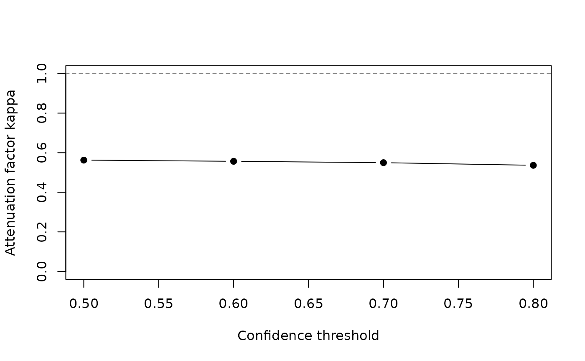

For a binary group, kappa_curve() evaluates the attenuation factor
\(\kappa(t) = E[\tilde a_t a] / E[\tilde a_t^2]\) of the label
\(1\{p > t\}\), where \(p\) is the probability of the non-reference
category, \(\tilde a_t = 1\{p > t\} - E[1\{p > t\} \mid X]\) and
\(a = p - E[p \mid X]\), on a grid of thresholds \(t\), together with the
cross-fitted hard-label estimate at each threshold. Under the assumptions
of soft_lm(), the hard estimate converges to
\(\kappa(t)\,\tau\), so values of \(\kappa\) close to one mean that
thresholding at \(t\) loses little, and values well below one that it
attenuates the coefficient. As in compare_hard(), the label
regressions use the folds, the learner and the seed of the fit.
Arguments
- object
[mandatory] (softcats) A fit returned by
soft_lm()with two categories.- thresholds
[optional] (numeric) Thresholds at which to evaluate the curve (default:
seq(0.5, 0.95, by = 0.05)).- level
[optional] (numeric) Confidence level for the hard-label intervals (default:
0.95).- x
[mandatory] (softcats_kappa) Result of
kappa_curve().- digits
[optional] (integer) Number of significant digits to print (default:
3).- ...
[optional] Not used.
Value
A data frame of class softcats_kappa with columns
threshold, share_positive (weighted share labelled as the
non-reference category), kappa, estimate_hard,
std.error_hard, conf.low, conf.high and
estimate_soft. Thresholds at which the label does not vary give
NA. The print and plot methods return x invisibly.
References
Kurbucz, M. T. (2026). When to trust static confidence thresholding: Calibration diagnostics for pseudo-labelled regression. Knowledge-Based Systems, forthcoming. Earlier version: doi:10.48550/arXiv.2605.12780
Examples
# Example: Attenuation at four thresholds for a binary group
d <- sim_softcats(n = 2000, K = 2, seed = 6)
fit <- soft_lm(y ~ x1 + x2 + x3, probs = d$prob_B, data = d,
learner = lrn_lm(degree = 3), seed = 6)
kc <- kappa_curve(fit, thresholds = c(0.5, 0.6, 0.7, 0.8))
kc
#> threshold share_positive kappa estimate_hard std.error_hard conf.low conf.high
#> 0.5 0.494 0.562 0.573 0.0532 0.468 0.677
#> 0.6 0.411 0.557 0.639 0.0524 0.536 0.741
#> 0.7 0.334 0.550 0.621 0.0544 0.514 0.728
#> 0.8 0.251 0.536 0.629 0.0583 0.515 0.743
#> estimate_soft
#> 1.02
#> 1.02
#> 1.02
#> 1.02
plot(kc)
